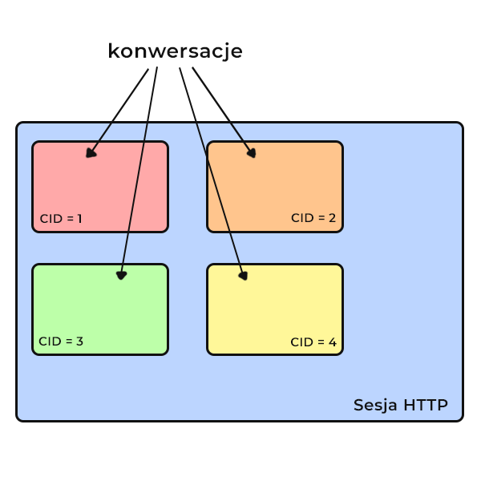
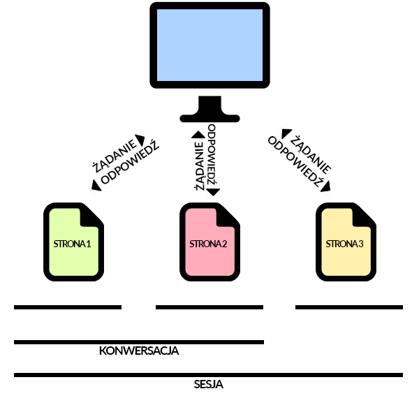

Wprowadzenie
SeamButBetter działa poprzez przechowywanie informacji o powstających konwersacjach oraz danych, jakie do tych konwersacji są przypisywane w trakcie trwania sesji. Odbywa się to po stronie użytkownika biblioteki, który podaje ścieżkę dostępu do pliku tekstowego bądź bazy danych. Zostały zatem wyróżnione dwa sposoby zapisu wspomnianych informacji. Każda konwersacja jest rozróżniana poprzez jednoznacznie ją identyfikujący ConversationID. Dodatkowo biblioteka zapewnia bezpieczeństwo konwersacji odbywających się z serwerem poprzez możliwość ustawienia przez tworzącego stronę time-out na przechowywanych danych. W ten sposób dane po upływie określonego czasu zostają usunięte.
W aplikacjach internetowych protokół bezstanowy HTTP określa sposób obsługi żądań użytkowników polegający na usuwaniu tych żądań pomiędzy stronami, nie zwracając uwagi na trwający przypadek użycia. W związku z tym wprowadzono konwersacje, których granice czasu trwania są zbieżne z granicami wybranego przypadku użycia, czyli zdeterminowanej wymiany danych między użytkownikiem a aplikacją.
Rys.1. Związek pomiędzy pojedynczym żądaniem strony, konwersacją a sesją użytkownika.
Każda konwersacja ma swój odrębny cykl życia w ramach sesji. W ten sposób możliwe jest zakończenie konwersacji bez niszczenia całej sesji.
Kiedy użytkownik (aktor) zainicjuje pewne działanie wtedy konwersacja się rozpoczyna. Pewien obszar sesji HTTP zostaje wydzielony i przypisany do niej. Równocześnie zostaje nadany takiemu obszarowi unikatowy identyfikator (ConversationID), który następnie w formie parametru może zostać przekazany do kolejnego żądania. W wyniku przesłania jego do serwera konwersacja zostaje przywrócona, czyli powiązana z obsługiwanym żądaniem.
Rys.2. Sesja wraz z odizolowanymi obszarami będącymi konwersacjami.
Konwersacje są zatem bardzo przydatne. Pozostają odizolowane względem siebie przechowując dane, które są potrzebne podczas korzystania z kilku stron. Przykładowo, umożliwiają zapis informacji zanim użytkownik prześle w pełni wypełniony formularz, nawet gdy proces ten wymaga przechodzenia z ekranu na ekran. Wtedy też informacje z poprzednich ekranów są gromadzone i przechowywane tak, aby były dostępne po ukończeniu działania na ostatnim ekranie.
Dana biblioteka zapewnia obsługę konwersacji, czyli zarządzanie odizolowanymi segmentami sesji, które będąc identyfikowane przez ConversationID pozwalają na wymianę danych atomicznych z punktu widzenia użytkownika.